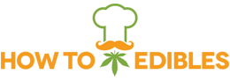

<!doctype html>
<!-- PROTOTYPE — throwaway. Question: what logo fits the Poster identity (Unbounded, #f27242 / #1f1410, flat shapes)?
     Round 2: owner liked C (badge). This explores the C family.
     Branch prototype/logo only. `python3 -m http.server 8768` from repo root, then /_prototype-logo/
     Params: v=C1|C2|C3|C0 (presets)  seal=plain|scallop|sticker  pop=0|1  word=stack|block  dot=leaf|plain  (mix freely)
             theme=light|dark  compare=1  shot=1
     Logo is inline SVG with live Unbounded <text>; the final asset gets outlined to paths (works as /favicon). -->
<html lang="en" data-theme="light">
<head>
<meta charset="utf-8">
<meta name="viewport" content="width=device-width, initial-scale=1, viewport-fit=cover">
<meta name="robots" content="noindex">
<title>PROTOTYPE · logo</title>
<link rel="preconnect" href="https://fonts.googleapis.com">
<link rel="preconnect" href="https://fonts.gstatic.com" crossorigin>
<link rel="stylesheet" href="https://fonts.googleapis.com/css2?family=Unbounded:wght@500..800&display=swap">
<style>
:root{--paper:#fff;--ink:#1f1410;--ink-2:#6a5a50;--orange:#f27242;--deep:#c9532a;--line:#ecdfd6;--chip:#f6eee9;color-scheme:light}
[data-theme=dark]{--paper:#191210;--ink:#f7ede6;--ink-2:#bba89b;--line:#3a2c26;--chip:#2a1f1b;--deep:#a8441f;color-scheme:dark}
*,*::before,*::after{box-sizing:border-box}
body{margin:0;background:var(--paper);color:var(--ink);font:17px/1.55 -apple-system,BlinkMacSystemFont,"Segoe UI",Roboto,sans-serif}
h1,h2{font-family:Unbounded,sans-serif;letter-spacing:-.02em;margin:0}
.wrap{max-width:680px;margin:0 auto;padding:0 20px}
@media (min-width:1000px){.wrap{max-width:1120px;padding:0 40px}}

/* logo colour roles — every context just remaps the three variables */
.lg .k{fill:var(--ink)} .lg .o{fill:var(--orange)} .lg .p{fill:var(--paper)}
.lg .s-k{fill:none;stroke:var(--ink)} .lg .s-p{fill:none;stroke:var(--paper)} .lg .s-o{fill:none;stroke:var(--orange)}
.lg .halo *{fill:var(--ink);stroke:var(--ink);stroke-width:8;stroke-linejoin:round}
.lg .halo .s-o{stroke-width:11}
.lg text{font-family:Unbounded,sans-serif;letter-spacing:-.02em}
.fixed{--ink:#1f1410;--paper:#fff;--orange:#f27242} /* favicons are static files: no theme */
.on-orange{--ink:#1f1410;--paper:#fff}
/* dark theme: the badge never inverts (a chef hat is white); a cream edge separates it from the dark page */
[data-theme=dark] .lg [data-mark],[data-theme=dark] .lg[data-mark]{--ink:#1f1410;--paper:#fff}
[data-theme=dark] .lg .disc{stroke:#f7ede6;stroke-width:3}
[data-theme=dark] .on-orange .disc,[data-theme=dark] .fixed .disc{stroke:none}
.on-orange [data-leaf]{--orange:#fff}

/* shell, same numbers as prototype/pages */
.hdr{display:flex;align-items:center;justify-content:space-between;height:108px;gap:12px}
.hdr .lg{width:min(240px,calc(100vw - 40px - 116px));height:auto;max-height:80px;display:block}
.tools{display:flex;gap:8px}
.ibtn{width:48px;height:48px;display:grid;place-items:center;border:2px solid var(--ink);border-radius:50%;background:var(--paper);flex:none}
.ibtn svg{width:24px;height:24px;stroke:currentColor;fill:none;stroke-width:1.9;stroke-linecap:round}
.cover{background:var(--orange);height:190px;position:relative;overflow:hidden}
.cover b{position:absolute;right:-30px;bottom:-60px;font:800 220px/1 Unbounded,sans-serif;color:var(--deep);letter-spacing:-.04em}
@media (min-width:640px){.cover{border-radius:28px}}
.title{margin:22px 0 0;font-size:44px;line-height:1.05}

.mini{display:flex;align-items:center;gap:12px;height:60px;border-bottom:2px solid var(--ink);border-top:2px solid var(--ink)}
.mini .lg{height:40px;width:auto;flex:none;display:block}
.mini .spill{flex:1;min-width:0;height:44px;border:2px solid var(--ink);border-radius:999px;padding:0 14px;display:flex;align-items:center;background:var(--chip);color:var(--ink-2);font-size:15px;white-space:nowrap;overflow:hidden}
.mini .ibtn{width:44px;height:44px}

.ftr{background:#f27242;color:#1f1410;padding:28px 0 40px;margin-top:8px}
.ftr .lg{width:220px;height:auto;display:block}
.ftr p{font-size:14px;margin:14px 0 0;font-weight:700}

.lab{font:600 11px/1.4 ui-monospace,Menlo,monospace;text-transform:uppercase;letter-spacing:.08em;color:var(--ink-2);margin:44px 0 10px}
.icons{display:flex;align-items:flex-end;gap:22px;flex-wrap:wrap}
.icons figure{margin:0;text-align:center;font:11px ui-monospace,Menlo,monospace;color:var(--ink-2)}
.icons svg{display:block;margin:0 auto 6px}
.tab{display:flex;align-items:center;gap:8px;max-width:300px;background:var(--chip);border-radius:10px 10px 0 0;padding:8px 12px;font-size:13px;white-space:nowrap;overflow:hidden}
.seals{display:flex;gap:16px;flex-wrap:wrap}
.seals>div{flex:1 1 220px;display:grid;place-items:center;padding:20px;border-radius:24px;background:var(--chip)}
.seals>.on-orange{background:#f27242}
.seals svg{width:min(220px,100%);height:auto}
.og{width:100%;height:auto;display:block;border-radius:12px}
.old{width:200px;height:auto}

.cmp{display:grid;gap:8px}
.cmp .row{border-bottom:2px solid var(--line)}
.cmp .tag{font:700 12px ui-monospace,Menlo,monospace;color:var(--ink-2)}
@media (min-width:1000px){.cmp{grid-template-columns:1fr 1fr}}

#bar{position:fixed;left:8px;bottom:8px;z-index:50;background:#222;color:#eee;font:12px ui-monospace,Menlo,monospace;padding:8px 10px;border-radius:8px;display:flex;flex-wrap:wrap;gap:6px 12px;max-width:calc(100vw - 16px)}
#bar a{color:#9cf}#bar a[aria-current]{color:#fff;font-weight:700;text-decoration:none}
</style>
</head>
<body>
<div id="app"></div>
<script>
const Q = new URLSearchParams(location.search);
const PRESET = {
  C1: { seal: "scallop", pop: "0", word: "block", dot: "leaf", name: "Carimbo" },
  C2: { seal: "sticker", pop: "1", word: "block", dot: "leaf", name: "Sticker" },
  C3: { seal: "plain", pop: "1", word: "block", dot: "plain", name: "Pop" },
  C0: { seal: "plain", pop: "0", word: "stack", dot: "plain", name: "C anterior" },
};
const KEYS = ["seal", "pop", "word", "dot"];
const v = PRESET[Q.get("v")] ? Q.get("v") : "C2";
const S = { theme: Q.get("theme") || "light", compare: Q.get("compare") === "1" };
KEYS.forEach((k) => (S[k] = Q.get(k) || PRESET[v][k]));
document.documentElement.dataset.theme = S.theme;

/* ---------- glyph parts (viewBox units) ---------- */
// cannabis leaf: 7 pointed leaflets radiating from (cx,cy), h = longest leaflet
function leaf(cx, cy, h, cls) {
  return [[0, 1, .2], [36, .8, .19], [-36, .8, .19], [72, .55, .16], [-72, .55, .16], [108, .3, .12], [-108, .3, .12]].map(([a, l, w]) => {
    const L = h * l, W = h * w;
    return `<path class="${cls}" transform="translate(${cx} ${cy}) rotate(${a})" d="M0 0C${W} ${-L * .3} ${W * .9} ${-L * .75} 0 ${-L}C${-W * .9} ${-L * .75} ${-W} ${-L * .3} 0 0Z"/>`;
  }).join("") + `<rect class="${cls}" x="${cx - h * .04}" y="${cy - 1}" width="${h * .08}" height="${h * .22}" rx="${h * .04}"/>`;
}
// toque: puffed crown + tapered band. Shapes only (colour comes from the wrapping <g>)
const HAT = `<circle cx="31" cy="34" r="15"/><circle cx="50" cy="25" r="20"/><circle cx="69" cy="34" r="15"/><rect x="31" y="30" width="38" height="18"/><path d="M33 46H67V61Q67 64 64 64H36Q33 64 33 61Z"/>`;
// handlebar mustache centred on (0,0): two fat lobes + curled tips
const MUS_BODY = `<path d="M0-1C-5-8-17-10-25-3C-19 6-7 6 0 3C7 6 19 6 25-3C17-10 5-8 0-1Z"/>`;
const MUS_CURL = (cls) => `<path class="${cls}" stroke-width="5" stroke-linecap="round" d="M-23-2C-29 3-37 1-37-6C-37-10-33-11-31-8M23-2C29 3 37 1 37-6C37-10 33-11 31-8"/>`;
// chef: hat (leaf knocked out of the crown) over a mustache. bbox ≈ x13..87, y5..88. r = class per role
function chef(r, halo = false) {
  return `${halo ? `<g class="halo">${HAT}<g transform="translate(50 80)">${MUS_BODY}${MUS_CURL("s-o")}</g></g>` : ""}
    <g class="${r.hat}">${HAT}</g>
    <path class="s-${r.ko}" stroke-width="3" d="M30 47.5Q50 52 70 47.5"/>
    ${leaf(50, 42, 21, r.ko)}
    <g class="${r.mus}" transform="translate(50 80)">${MUS_BODY}${MUS_CURL(`s-${r.mus}`)}</g>`;
}
const IN_BADGE = { hat: "p", ko: "k", mus: "o" };
// wavy "seal" edge
function scallop(cx, cy, R, a, n) {
  let d = "";
  for (let i = 0; i <= 360; i += 2) { const t = (i * Math.PI) / 180, r = R - a + a * Math.cos(n * t); d += `${i ? "L" : "M"}${(cx + r * Math.sin(t)).toFixed(2)} ${(cy - r * Math.cos(t)).toFixed(2)}`; }
  return d + "Z";
}
// the disc behind the chef, per seal style, for a circle (cx,cy,R)
function disc(seal, cx, cy, R) {
  if (seal === "scallop") return `<path class="k disc" d="${scallop(cx, cy, R, 2.6, 18)}"/><circle class="s-p" cx="${cx}" cy="${cy}" r="${R - 7}" stroke-width="1.4"/>`;
  if (seal === "sticker") return `<circle class="k" cx="${cx + 3.5}" cy="${cy + 4.5}" r="${R}"/><circle class="k" cx="${cx}" cy="${cy}" r="${R - 2}"/><circle class="s-p" cx="${cx}" cy="${cy}" r="${R - 2}" stroke-width="4"/>`;
  return `<circle class="k disc" cx="${cx}" cy="${cy}" r="${R}"/>`;
}
// badge. pop: smaller disc, chef bigger, hat and mustache tips break out of the frame (ink halo keeps them readable)
function badge(o) {
  if (o.pop === "1") return `${disc(o.seal, 50, 60, 40)}<g transform="rotate(-8 50 60) translate(-2.5 -12) scale(1.05)">${chef(IN_BADGE, true)}</g>`;
  return `${disc(o.seal, 50, 50, 48)}<g transform="rotate(-8 50 50) translate(11 13) scale(.78)">${chef(IN_BADGE)}</g>`;
}
// full seal with ring text: footer / about / social
const RING = "HOWTOEDIBLES.COM • DOSE IT RIGHT • SINCE 2017 • ";
function seal(o, id = "ring") {
  const c = 2 * Math.PI * 37.5;
  return `<svg class="lg" data-mark viewBox="-2 -2 104 104" role="img" aria-label="HowToEdibles">
    <defs><path id="${id}" d="M50 12.5A37.5 37.5 0 1 1 49.99 12.5"/></defs>
    ${o.seal === "scallop" ? `<path class="k disc" d="${scallop(50, 50, 49, 2.4, 22)}"/>` : o.seal === "sticker" ? `<circle class="k" cx="53" cy="54" r="48"/><circle class="k" cx="50" cy="50" r="47"/><circle class="s-p" cx="50" cy="50" r="47" stroke-width="3"/>` : `<circle class="k disc" cx="50" cy="50" r="49"/>`}
    <text class="p" font-size="7" font-weight="700" letter-spacing="0"><textPath href="#${id}" textLength="${(c - 3).toFixed(1)}" lengthAdjust="spacing">${RING}</textPath></text>
    <circle class="s-p" cx="50" cy="50" r="32" stroke-width="1.4"/>
    <g transform="rotate(-8 50 50) translate(22 23) scale(.56)">${chef(IN_BADGE)}</g></svg>`;
}
// wordmarks start at x=0; layout() fits them after fonts load
const ed = (dot) => dot === "leaf" ? `Ed<tspan>ı</tspan>bles` : "Edibles";
const WORD = {
  stack: () => `<text class="k" x="0" y="38" font-size="31" font-weight="700">How to</text><text class="k" x="0" y="92" font-size="54" font-weight="800">Edibles</text>`,
  // "HOW TO" tracked out to the exact width of "Edibles": one justified block
  block: (dot) => `<text class="k" data-howto x="1.5" y="45" font-size="38" font-weight="800" letter-spacing="0">HOW TO</text>
    <text class="k" data-ed x="0" y="97" font-size="56" font-weight="800">${ed(dot)}</text>${dot === "leaf" ? `<g data-leaf>${leaf(0, 0, 14, "o")}</g>` : ""}`,
};
const lockup = (o) =>
  `<svg class="lg" data-lockup viewBox="0 0 400 110" preserveAspectRatio="xMinYMid meet" role="img" aria-label="HowToEdibles">
    <g data-mark>${badge(o)}</g><g data-word>${WORD[o.word](o.dot)}</g></svg>`;

// icons: no pop (it doesn't survive 16px), chef a bit bigger than in the lockup
function icon(o, size) {
  const sealStyle = o.seal === "scallop" && size >= 48 ? "scallop" : "plain";
  return `<svg class="lg fixed" width="${size}" height="${size}" viewBox="0 0 100 100" aria-hidden="true">${disc(sealStyle, 50, 50, 50)}
    <g transform="rotate(-8 50 50) translate(7 9.5) scale(.86)">${chef(IN_BADGE)}</g></svg>`;
}
// social card 1200×630
const og = (o) => `<svg class="lg og on-orange" viewBox="0 0 1200 630" role="img" aria-label="HowToEdibles social card">
  <rect width="1200" height="630" fill="#f27242"/>
  <text x="1240" y="760" text-anchor="end" font-size="380" font-weight="800" fill="#c9532a" style="letter-spacing:-.04em">mg</text>
  <g transform="translate(70 95) rotate(-6 220 220) scale(4.4)">${seal(o, "ring-og").replace(/^<svg[^>]*>|<\/svg>$/g, "")}</g>
  <g data-word transform="translate(575 150) scale(2.15)">${WORD.block(o.dot)}</g>
  <text x="588" y="436" font-size="22.5" font-weight="500" fill="#1f1410" style="letter-spacing:0">Cannabis recipes · dosage calculator</text></svg>`;

/* ---------- page ---------- */
const I = {
  search: `<svg viewBox="0 0 24 24"><circle cx="11" cy="11" r="7"/><path d="m20 20-3.5-3.5"/></svg>`,
  menu: `<svg viewBox="0 0 24 24"><path d="M4 7h16M4 12h16M4 17h10"/></svg>`,
};
const masthead = (o) => `<header class="hdr">${lockup(o)}<div class="tools"><span class="ibtn">${I.search}</span><span class="ibtn">${I.menu}</span></div></header>`;

function single() {
  return `<div class="wrap">${masthead(S)}</div>
  <div class="wrap" style="padding:0"><div class="cover"><b>mg</b></div></div>
  <div class="wrap"><h1 class="title">Pot Brownies</h1>
    <div class="lab">barra compacta (rolando) · logo 40px de altura</div>
    <div class="mini">${lockup(S)}<span class="spill">Search 237 recipes</span><span class="ibtn">${I.menu}</span></div>
    <div class="lab">selo completo · rodapé, about, redes (texto do anel é placeholder)</div>
    <div class="seals"><div>${seal(S, "ring1")}</div><div class="on-orange">${seal(S, "ring2")}</div></div>
    <div class="lab">ícones · favicon 16 / 32 / 48 · apple-touch 180 (½)</div>
    <div class="icons">${[16, 32, 48, 90].map((s) => `<figure>${icon(S, s)}${s === 90 ? "180" : s}</figure>`).join("")}</div>
    <div class="lab">aba do navegador</div>
    <div class="tab">${icon(S, 16)}<span>Pot Brownies · HowToEdibles</span></div>
    <div class="lab">card de compartilhamento 1200×630 (og:image)</div>
    ${og(S)}
    <div class="lab">rodapé</div>
  </div>
  <div class="ftr on-orange"><div class="wrap">${lockup(S)}<p>Recipes · Calculator · Articles</p></div></div>
  <div class="wrap"><div class="lab">logo atual</div></div>
  <div style="height:90px"></div>`;
}
function compare() {
  return `<div class="wrap cmp">${Object.entries(PRESET).map(([k, p]) => `<div class="row"><span class="tag">${k} · ${p.name}</span>${masthead(p)}
    <div class="icons" style="margin:0 0 16px">${[16, 32, 48].map((s) => `<figure>${icon(p, s)}</figure>`).join("")}</div></div>`).join("")}
    <div class="row"><span class="tag">atual</span><header class="hdr"></header></div></div>`;
}

function bar() {
  const link = (k, val, label = val) => {
    const p = new URLSearchParams(location.search);
    if (k === "v") { KEYS.forEach((x) => p.delete(x)); p.delete("compare"); }
    p.set(k, val);
    const cur = k === "v" ? !S.compare && v === val && KEYS.every((x) => !Q.get(x)) : k === "compare" ? S.compare : S[k] === val;
    return `<a href="?${p}" ${cur ? 'aria-current="true"' : ""}>${label}</a>`;
  };
  return `<div id="bar">variant: ${Object.keys(PRESET).map((x) => link("v", x)).join(" ")} ${link("compare", "1", "compare")}
    | seal: ${["plain", "scallop", "sticker"].map((x) => link("seal", x)).join(" ")}
    | pop: ${link("pop", "0")} ${link("pop", "1")}
    | word: ${["block", "stack"].map((x) => link("word", x)).join(" ")}
    | dot: ${["leaf", "plain"].map((x) => link("dot", x)).join(" ")}
    | theme: ${link("theme", "light")} ${link("theme", "dark")}</div>`;
}

// export=1: the final assets, one per [data-out], serialised after layout (see build_assets.py)
function exportPage() {
  const C2 = PRESET.C2, inner = (svg) => svg.replace(/^<svg[^>]*>|<\/svg>$/g, "");
  const touch = `<svg class="lg fixed" viewBox="0 0 100 100"><rect width="100" height="100" fill="#f27242"/><g transform="translate(10 10) scale(.8)">${inner(icon(C2, 100))}</g></svg>`;
  const out = { logo: lockup(C2), "logo-dark": lockup(C2), "logo-on-orange": lockup(C2), seal: seal(C2, "ring-x"), icon: icon(C2, 512), "apple-touch-icon": touch, "og-image": og(C2) };
  const wrap = { "logo-dark": 'data-theme="dark" style="background:#191210"', "logo-on-orange": 'class="on-orange" style="background:#f27242"' };
  return Object.entries(out).map(([k, svg]) => `<div data-out="${k}" ${wrap[k] || ""}>${svg}</div>`).join("");
}
// inline computed colours, swap every <text> for glyph placeholders (char, origin, rotation, size, weight) for fontTools
function serialise(div) {
  const svg = div.querySelector("svg"), num = (x) => String(parseFloat(x));
  for (const t of svg.querySelectorAll("text")) {
    const cs = getComputedStyle(t), str = t.textContent, gl = [];
    for (let i = 0; i < str.length; i++) {
      if (!str[i].trim()) continue;
      const p = t.getStartPositionOfChar(i);
      gl.push({ c: str[i], x: +p.x.toFixed(3), y: +p.y.toFixed(3), r: +t.getRotationOfChar(i).toFixed(3), s: parseFloat(cs.fontSize), w: +cs.fontWeight });
    }
    t.dataset.fill = cs.fill;
    t.dataset.gl = JSON.stringify(gl);
  }
  for (const el of svg.querySelectorAll("path,circle,rect")) {
    const cs = getComputedStyle(el);
    el.setAttribute("fill", cs.fill); el.setAttribute("stroke", cs.stroke);
    if (cs.stroke !== "none") { el.setAttribute("stroke-width", num(cs.strokeWidth)); el.setAttribute("stroke-linecap", cs.strokeLinecap); el.setAttribute("stroke-linejoin", cs.strokeLinejoin); }
  }
  for (const t of [...svg.querySelectorAll("text")]) {
    const g = document.createElementNS("http://www.w3.org/2000/svg", "g");
    g.setAttribute("fill", t.dataset.fill); g.setAttribute("data-glyphs", t.dataset.gl);
    t.replaceWith(g);
  }
  svg.querySelectorAll("defs").forEach((d) => d.remove());
  for (const el of [svg, ...svg.querySelectorAll("*")]) { el.removeAttribute("class"); el.removeAttribute("style"); [...el.attributes].forEach((a) => a.name.startsWith("data-") && a.name !== "data-glyphs" && el.removeAttribute(a.name)); }
  svg.removeAttribute("preserveAspectRatio"); svg.removeAttribute("width"); svg.removeAttribute("height");
  return new XMLSerializer().serializeToString(svg);
}

const EXPORT = Q.get("export") === "1";
document.getElementById("app").innerHTML = EXPORT ? exportPage() : (S.compare ? compare() : single()) + (Q.get("shot") ? "" : bar());

// layout after fonts: justify HOW TO to Edibles, put the leaf over the dotless i, place word right of mark, fit viewBox
document.fonts.ready.then(() => {
  for (const w of document.querySelectorAll("[data-word]")) {
    const h = w.querySelector("[data-howto]"), e = w.querySelector("[data-ed]");
    if (h) { h.setAttribute("textLength", e.getComputedTextLength() - 3); h.setAttribute("lengthAdjust", "spacing"); }
    const l = w.querySelector("[data-leaf]");
    if (l) { const i = e.getExtentOfChar(2); l.setAttribute("transform", `translate(${i.x + i.width / 2} ${97 - 56 * .63})`); }
  }
  for (const svg of document.querySelectorAll("[data-lockup]")) {
    const m = svg.querySelector("[data-mark]").getBBox(), w = svg.querySelector("[data-word]");
    w.setAttribute("transform", `translate(${m.x + m.width + 12} 0)`);
    const bb = svg.getBBox(), pad = 2;
    svg.setAttribute("viewBox", `${bb.x - pad} ${bb.y - pad} ${bb.width + pad * 2} ${bb.height + pad * 2}`);
  }
  if (EXPORT) window.__export = Object.fromEntries([...document.querySelectorAll("[data-out]")].map((d) => [d.dataset.out, serialise(d)]));
  window.__m = { lockups: [...document.querySelectorAll("[data-lockup]")].map((s) => { const r = s.getBoundingClientRect(); return `${Math.round(r.width)}x${Math.round(r.height)}`; }) };
});
</script>
</body>
</html>
